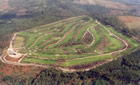
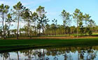
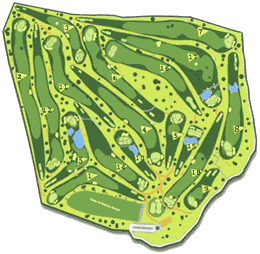

|
 |
 |
 |
| CASA RURAL |  |
LOCALIZACIÓN | |
CONTACTAR | MONASTERIO | GOLF | |
RUTAS | |
PLAYAS | |
FIESTAS | |
|
|
|
CAMPO DE GOLF MONTE CASTROVE
Website: www.campodegolfmeis.com Teléf.: +34 986 68 05 33 El campo de golf está situado a diez minutos de la villa de Sanxenxo, en las inmediaciones de la cumbre del Monte Castrove en Silván de Armenteira, Meis, Pontevedra. Posee un recorrido natural en un bosque de pinos gallegos. El campo dispone de amplias calles de "lies", "dog-legs", lagos y obstáculos naturales dentro de un entorno de tranquilidad en plena montaña, con impresionantes vistas a las rías de Pontevedra y Arousa, y al valle del Salnés. Entre los valores técnicos cabe destacar un Par y Slop equilibrados, lo que hace que tenga un recorrido competitivo para todos los niveles. El Campo, que abarca 53 hectáreas, fue inaugurado el 17 de mayo del 2.000. Ofrece en la actualidad 18 hoyos, campo de prácticas y escuela. Por contar con las mejores instalaciones para la práctica de este deporte, se celebró en este campo la 22ª EUROPEAN LADIES TEAM CHAMPIONSHIP, campeonato de Europa femenino por equipos del 2.001. |
|||||||||||||||||||||||||||||||||||||||||||||||||||||||
|
ENTE DEPORTIVO: GCO5 Club de Golf CHAN DO FENTO Presidente D. Antonio Grandes Santos. Federado en 1988. DIRECCIÓN: Silván de Armenteira 36192 MEIS (Pontevedra) TELÉFONOS DE RESERVAS FIJO: 986 680 400 MÓVIL: 667 523 023 AEROPUERTO: Vigo a 35 min., Santiago a 30 min., Oporto a 95 min. ACCESO: Autovía del Salnés, salida a Cambados y subida Meis-Armenteira. |
 |
||||||||||||||||||||||||||||||||||||||||||||||||||||||

El Campo de golf Monte Castrove está gestionado por la
Fundación del mismo nombre, creada el 21 de febrero de 1997
y constituída por los ayuntamientos de Pontevedra, Meis,
Sanxenxo, Villagarcía de Arosa, Meaño, Cambados, Vilanova de
Arousa y Ribadumia, así como por el Club de Golf Chan do
Fento y la Federación Española de golf. Los terrenos fueron
cedidos por la Comunidad de Montes Silván de Armenteira y el
proyecto fue financiado por los ocho concellos mencionados,
la Xunta de Galicia, la Diputación de Pontevedra, la
Federación Española de Golf y el Consejo Superior de
Deportes. Entre los objetivos de la Fundación Monte Castrove están crear rutas de senderismo en el entorno del campo, la organización de campeonatos de golf que promocionen distintas empresas de la comarca y la promoción de este deporte entre los escolares. Fuente: Ayuntamiento de Meis |
|||||||||||||||||||||||||||||||||||||||||||||||||||||||
| Casa rural | Localización | Contactar | Monasterio | Club de golf | Rutas | Playas | Fiestas | |||||||||||||||||||||||||||||||||||||||||||||||||||||||